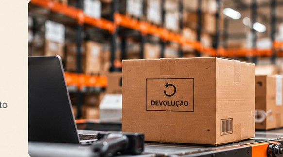

01
Solicitação
O cliente solicita a devolução do produto por meio da plataforma.
A BUSCA AÍ organiza o acompanhamento das devoluções, ajudando empresas a analisar as condições dos produtos, identificar possibilidades de reaproveitamento e buscar formas de recuperar valor.
Acessar a plataforma
Entenda como uma devolução passa por cada etapa até encontrar o melhor destino.
A BUSCA AÍ não cuida somente do transporte de produtos devolvidos. Nosso objetivo é encontrar a melhor maneira de recuperar o valor de cada item.
Dessa forma, ajudamos empresas a reduzir custos, liberar estoque e transformar devoluções em novas oportunidades.
Conheça a plataforma e veja como organizar solicitações, acompanhar etapas e identificar oportunidades de recuperação de valor.